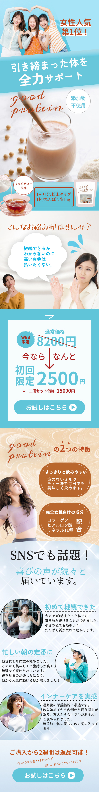

← Back to main page

プロテイン
ターゲット
体を引き締めたい、あるいはダイエットと美容を同時に叶えたいと考える女性。運動習慣を身につけたい・食生活を整えたいという意欲はあるものの、「プロテインは続けられるか不安」「高い金額を払って失敗したくない」という理由で購入をためらってきた層。健康・美容への関心は高い一方で、継続性と価格の両面に慎重な、堅実な購買検討者を主なターゲットにしている。
デザイン上の工夫
ベージュやくすみピンクを中心とした柔らかく上品な配色でまとめ、女性が手に取りやすい親しみやすさと安心感を演出している。ファーストビューでは「女性人気第1位！」のバッジと「引き締まった体を全力サポート」のキャッチコピーで信頼感と期待感を最初に提示し、「添加物不使用」「1杯約84kcal」といった気になる情報を添えることで、健康志向の読者に対する訴求力を高めている。続く「こんなお悩みありませんか？」のパートでは、「続けられるか分からない」「高い金額は払いたくない」という読者の本音そのものを代弁し、共感を通じて心理的な距離を縮めている。その直後に「通常価格8200円→初回限定2500円」と価格差を大きく見せることで割安感を強烈に印象づけ、価格への不安を解消しながら「お試しはこちら」のボタンへとスムーズに誘導。中盤では「2つの特徴」やコラーゲン・ヒアルロン酸配合といった女性向け成分を図解して機能面の裏付けを示し、さらに「SNSでも話題！」として実際の利用者の喜びの声を並べることで社会的証明を積み上げている。悩みへの共感→価格訴求→成分による根拠→口コミによる後押し、という王道の縦導線を丁寧に組み立て、慎重な読者でも納得して申し込めるよう設計された構成になっている。